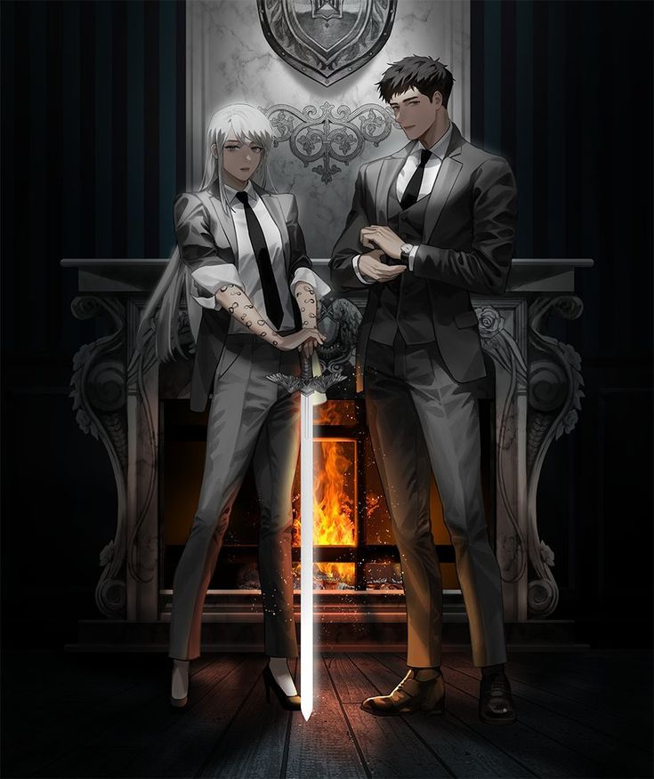

Hay muchos personajes en Lector omnisciente pero solo nombraremos a los mas relevantes y a los que acompañan a lo largo de toda la novela a nuestro protagonista en su aventura.
Kim Dokja (김독자, Kim Dok-ja) que significa lector o hijo unico en coreano
El protagonista principal de la serie. Es un oficinista promedio que siente pasión por la lectura, siendo su novela web favorita "Tres maneras de sobrevivir en un mundo en ruinas".Pues el lleva leyendo esa novela desde su ultimo año de secundaria hasta su edad actual de alrededor de 28 años y el cual le ha llevado a sobrevivir de muchas maneras, pues esa novela lo ayudo a soportar los momentos dificiles de su vida uno de ellos es el abuso escolar que sufria.
Yoo Joonghyuk (유중혁, Yu Jung-hyeok)
El protagonista principal de la novela web que nuestro protagonista kim dokja ha llevado leyendo casi toda su vida y uno de los personajes más poderosos de la novela web original, "Tres maneras de sobrevivir en un mundo en ruinas". Aunque al principio desconfía de Kim Dokja y con frecuencia luchan por entenderse, se vuelven más cercanos y se refieren a él como el "compañero de vida o muerte" de Kim Dokja el cual representa una union inquebrantable en la novela.
SECUNDARIOS

Lee Hyunsung (이현성, Lee Hyeon-seong)
Es un ex teniente del ejército. Originalmente era un personaje de "Tres maneras de sobrevivir en un mundo en ruinas", luchando bajo el liderazgo de Yoo Joonghyuk, pero se convierte en el aliado y compañero de Kim Dokja durante esta progresión de la historia, pues son los personajes secundarios que mas aparecen debido a sus constelaciones que asi como hay malvadas constelaciones tambien hay buenas que cuidan de los humanos atraves de selecciones donde cada humano tiene la oportunidad de escoger a una de ellas para que cuide de el, su constelacion llamado Master of Steel (Maestro del acero).
Jung Heewon (정희원, Jeong Hui-won)
Fue un personaje secundario en "Tres maneras de sobrevivir al Apocalipsis" como parte del "grupo marginado" de la estación Geumho que muere al principio de la novela, pero es salvada por Kim Dokja y su grupo y luego se une a ellos. Con el tiempo se convierte en una de las personas más fuertes de la historia pues posee una de las constelaciones mas fuertes y poderosas llamada "Demon-like Judge of Fire" (Juez de Fuego con aspecto de demonio) el dueño de este modificador llamada Uriel.